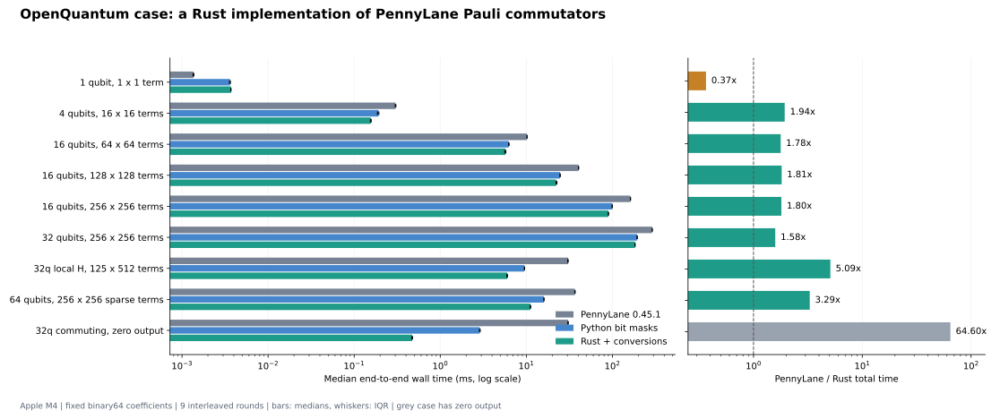

OPENQUANTUM · 可复核计算案例 · 2026-10-20 · Apple M4用 Rust 改进 PennyLane 的 Pauli 对易子计算
30.62 ms → 6.02 ms，5.09×
实测硬件 Apple M4 上，PennyLane 0.45.1 的代表案例为 30.62 ms → 6.02 ms，5.09×。该任务计算一个 32 量子位、125 项局域 Hamiltonian 与一个含 512 项的二体算符和的单个对易子。时间包含从 PennyLane 对象转入 Rust、计算、返回及重建 PennyLane 对象。
位编码 Python 的完整调用为 9.50 ms，Rust 为 6.02 ms，后一步的收益为 1.58×。同为预编码输入时，Python 内核 4.198 ms，Rust 内核 0.213 ms，约 19.72×。整体加速同时包含数据表示与执行实现的变化，不能全部归因于 Rust 语言。
全部预定义场景

| 场景 | PennyLane / ms | 位编码 Python / ms | Rust 完整调用 / ms | 加速 | 非零项 |
|---|
| 单比特 X 与 Y | 0.001359 | 0.003619 | 0.003715 | 0.37× | 1 |
| 4 位随机算符和，16 × 16 项 | 0.301991 | 0.192102 | 0.156058 | 1.94× | 110 |
| 16 位稠密随机，64 × 64 项 | 10.191042 | 6.254459 | 5.731542 | 1.78× | 2063 |
| 16 位稠密随机，128 × 128 项 | 40.388833 | 24.679916 | 22.259000 | 1.81× | 8298 |
| 16 位稠密随机，256 × 256 项 | 162.220167 | 99.680375 | 89.940292 | 1.80× | 32687 |
| 32 位稠密随机，256 × 256 项 | 290.283625 | 193.913167 | 183.234500 | 1.58× | 32777 |
| 32 位局域 H 与二体算符和，125 × 512 项 | 30.621250 | 9.502542 | 6.018459 | 5.09× | 4325 |
| 64 位稀疏随机，256 × 256 项 | 36.744500 | 16.011791 | 11.173875 | 3.29× | 5888 |
| 32 位全可交换，输出为零 | 30.489333 | 2.880167 | 0.471958 | 64.60× | 0 |
单比特小任务的完整 Rust 调用更慢；全可交换场景返回零，因而可以很快跳过构造输出。两者均保留在全表中。全可交换场景的大倍数不能概括一般任务。代表案例是对算符和的一次对易子计算，文件 ID 中的 pool512 不表示做了 512 次独立梯度计算。
结果核对
独立 Kronecker 矩阵穷举覆盖 1–3 位全部 4,368 对 Pauli 单项，结果精确一致。40 组随机复系数算符和同时比较全部 Pauli 系数与独立矩阵，最大矩阵绝对误差 1.42e-14。另外覆盖相消、极小非零系数、混合 wire 标签、实际 64-wire 往返、65-wire 拒绝和非有限结果拒绝；共 96 条验证记录。9 个计时场景中的四种对照实现也逐项核对，全部通过。
测量方法
固定 plan.json 中的输入类型、规模与 seed；同进程、每方法预热 2 次，9 轮打乱方法次序，报告中位数、四分位区间及全部 405 条原始样本。小任务自动批量重复，最多 16,384 次/样本；较大任务通常每样本 1 次。计时使用 perf_counter_ns，计时期间关闭循环 GC。Rust 单线程，释放 GIL 不启动线程；BLAS/OpenMP 等环境上限设为 1。生成输入、核验、环境安装和编译不计入热运行耗时。未专门测量峰值内存，未做跨机器或跨平台性能验收。
适用范围
本原型只处理固定、有限的 binary64 实数/复数系数，最多 64 个可映射 wire，返回 PauliSentence；不做近似截断，只移除精确零项。拒绝自动微分量、广播数组、非有限系数、超出支持精度的系数和结果溢出。它是一个算符代数子任务，不是 PennyLane 整体、完整 VQE/ADAPT 或量子模拟器的性能测试。
输入与复跑
源码、输入计划和复跑说明见 案例 README。本次保留全部随机输入、完整非零输出数组和原始计时。
计时 JSON · 原始 CSV · 核验 · 输入 · 输出数组 · OpenQuantum 回执 · 独立审阅